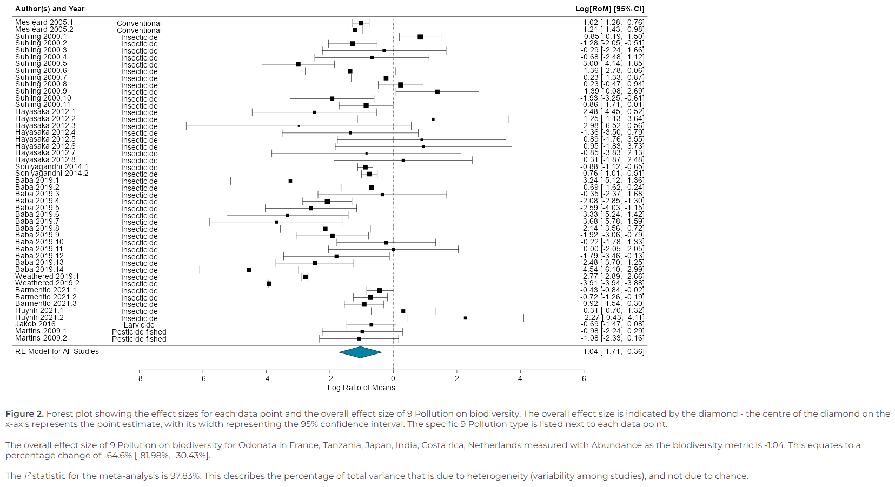

A dynamic platform for ecological meta-analyses in R Shiny
Dynameta is an R Shiny platform written as an R package. This means the app can be launched by running the launch_Dynameta() function included in the R package. The Dynameta app can then be used to run interactive meta-analytic models. This document introduces you to the Dynameta package, how to use it to launch the Dynameta Shiny app, and how to use the Dynameta Shiny app.
Meta-analyses are used to quantitatively summarise evidence across studies in a systematic process. Their larger sample size (and hence power) compared to individual research studies increases the chance of detecting significant effects.
Despite representing a significant improvement upon individual studies, meta-analyses have a number of limitations which Dynameta was developed to overcome:
- Meta-analytic results are based on a snapshot of literature at a particluar time. As a living review platform, Dynameta overcomes this by enabling results to be continually updated as new evidence becomes available.
- Meta-analytic publications are resticted to presenting the results of the chosen questions asked by those researchers. On the other hand, Dynameta allows investigation of a range of questions based on varying interests of researchers through manipulation of the graphical user interface.
Dynameta is designed for interactive ecological meta-analyses, oriented around testing the effect of anthropogenic threats (based on the IUCN threats classification scheme) on biodiversity. Nevertheless, the code can be easily repurposed to suit a variety of meta-analytic contexts. The server.R and ui.R files that define the Dynameta Shiny app can be found in the Dynameta_app/ directory. On github, Dynameta_app/ can be found in the inst/ directory. If you have installed the package, the Dynameta_app/ directory can be found directly in the package root directory, alongside the DESCRIPTION, NAMESPACE, etc. files.
Dynameta was developed as part of the GLiTRS project, a cross-institutional consortium aiming to build global threat-response models to better understand and predict insect biodiversity change.
Installing the package requires devtools, which can be installed and loaded by running:
install.packages("devtools")
library(devtools)Next, install the Dynameta package by running:
devtools::install_github("gls21/Dynameta", build_vignettes = TRUE)Then load the package by running:
library(Dynameta)
library(tibble) # for previewing sample dataset
#> Warning: package 'tibble' was built under R version 4.2.3For access to help documentation, run:
help(package = "Dynameta")Data: sample_data
The Dynameta package comes with sample_data, which is
used by default by the Dynameta Shiny app. This is an example dataset
containing data collected for a GLiTRS meta-analysis investigating the
effect of pollution (specifically pesticide application) on dragonfly
and damselfly (Odonata) abundance. The dataset is described in full in
?Dynameta::sample_data.
dim(Dynameta::sample_data)
#> [1] 47 46
# Print dataset as a tibble (nice way to preview dataset)
as_tibble(sample_data)
#> # A tibble: 47 × 46
#> Paper_ID Included Observation_ID Author Year Title Journal DOI URL
#> <chr> <chr> <chr> <chr> <int> <chr> <chr> <chr> <chr>
#> 1 Suhling 2000 Y Suhling 2000 1 Suhlin… 2000 Effe… Hydrob… http… http…
#> 2 Suhling 2000 Y Suhling 2000 2 Suhlin… 2000 Effe… Hydrob… http… http…
#> 3 Suhling 2000 Y Suhling 2000 3 Suhlin… 2000 Effe… Hydrob… http… http…
#> 4 Suhling 2000 Y Suhling 2000 4 Suhlin… 2000 Effe… Hydrob… http… http…
#> 5 Suhling 2000 Y Suhling 2000 5 Suhlin… 2000 Effe… Hydrob… http… http…
#> 6 Suhling 2000 Y Suhling 2000 6 Suhlin… 2000 Effe… Hydrob… http… http…
#> 7 Suhling 2000 Y Suhling 2000 7 Suhlin… 2000 Effe… Hydrob… http… http…
#> 8 Suhling 2000 Y Suhling 2000 8 Suhlin… 2000 Effe… Hydrob… http… http…
#> 9 Suhling 2000 Y Suhling 2000 9 Suhlin… 2000 Effe… Hydrob… http… http…
#> 10 Suhling 2000 Y Suhling 2000 10 Suhlin… 2000 Effe… Hydrob… http… http…
#> # ℹ 37 more rows
#> # ℹ 37 more variables: Language <chr>, Database <chr>, Latitude <dbl>,
#> # Longitude <dbl>, Country <chr>, Taxa_level <chr>, Taxa_name <chr>,
#> # Order <chr>, Family <chr>, Genus <lgl>, Binomial <chr>,
#> # Life_history_stage <chr>, Experimental_year_start <int>,
#> # Experimental_year_end <int>, Sampling_method <chr>,
#> # Biodiversity_metric <chr>, Unit <chr>, IUCN_threat_category_1 <chr>, …Launch the Dynameta Shiny app
To launch a local instance of the Dynameta Shiny app, run the
following code:
The following code is not executed here as it
prevents the document from knitting.
Dynameta::launch_Dynameta() # The function takes no argumentsProcess for using the Dynameta Shiny app
1. Introduction tab
- Once the app has opened, you can choose whether you want to analyse the sample data included in the package or upload your own meta-analytic data to analyse.
- If you select ‘Your own data’, you will then be given the option to upload a .csv file. This needs to be of the same format as the sample data provided.
- The ‘Introduction’ tab provides a breakdown of the data that you will analyse using Dynameta, including details of the papers and the IUCN threat(s) they investigated, and a map indicating where each data point originated from.

2. Run models tab
- To run meta-analytic models to investigate how different threats impact biodiversity, go to the ‘Run models’ tab.
- The models are multilevel meta-analytic models, run using the metafor package. The models account for the non-independence of the data by specifying paper and observation identification as nested random effects.
- The effect size used to compare biodiversity is the log transformed Ratio Of Means (ROM) (also known as the log response ratio), which quantifies proportionate change between treatments.
- Based on your research question, you can filter the data by threat, location, taxonomic order, and biodiversity metric the data was collected with.
- Make your selections, then click ‘Run custom model’.

- Dynameta will run the model in real-time and produce a forest plot of the results. This includes an estimate of the overall effect size of your chosen IUCN threat on biodiversity.
- You are also able to download the model object (.rds) and a file containing the results summary of the model fitting (.txt).
